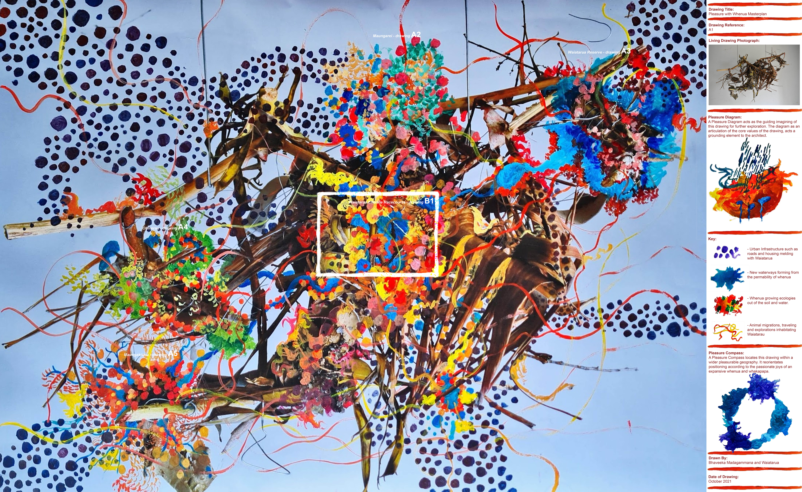
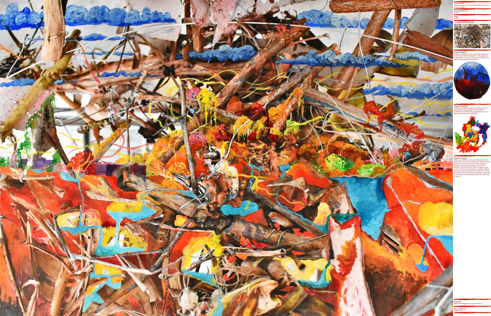
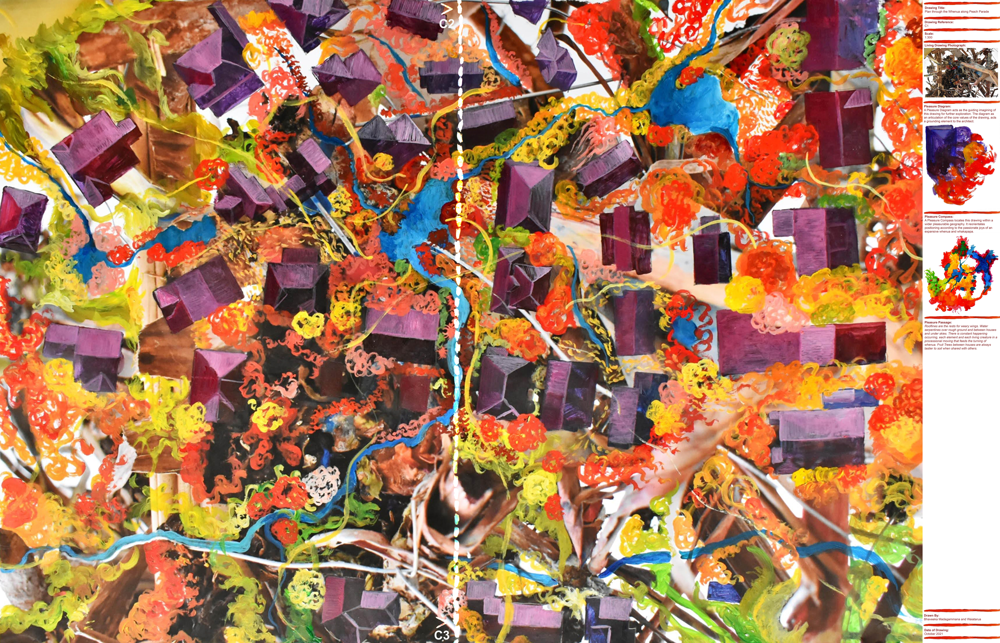
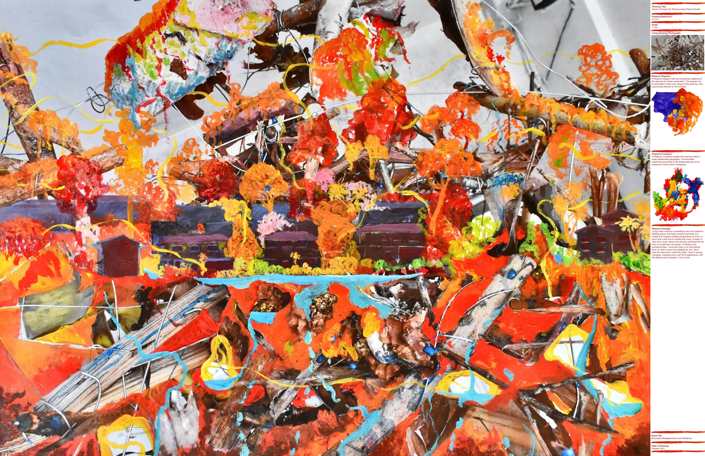

A Pleasurable Methodology: Cultivating with Waiatarua
A Pleasurable Methodology is an alternative architectural practice that works by emphasising how an embodied shared
empathy with the earth and her ineffable complexities, can create more equitable spaces. This methodology was initiated
as a response to the construction of the 1960 Ellerslie Racecourse Grandstand. Its concrete foundation filled in and
sealed off Waiatarua (Two Songs), a set of ancient subterranean caves formed by Maungakiekie’s eruptions that emanated
songs between pools of collected rainwater. Waiatarua’s whakapapa is characterised by abundance and rich exchanges,
sitting amongst famed maungas and gardens within the isthmus.
This project conceptualises Waiatarua’s filling in as just one of many destructive incidents in an extensive
architectural colonial methodology.1 Colonial methods have systematically dispossessed Māori of their land, completely
transfiguring whenua and producing disproportionately poor outcomes for contemporary Māori in areas such as health and
housing. Consequently, this thesis identifies the racecourse as a place of colonial pleasure, characterised as
satisfactory activities experienced at the expense of whenua’s erasure. As a place of colonial pleasure for 164 years,
the Racecourse inscribes further procurement and construction over whenua. The likes of the current multi-million dollar
development occurring on land sold at the Racecourse’s periphery ensures its survival as an institution.
If colonial pleasure can uphold an architecture for generations, can we reconstitute it to pleasure with whenua? Can we create a new
methodology to change the production of space by changing the way we produce knowledge?
The Pleasurable Methodology’s core concept of pleasure with whenua is the embodied joys and passions experienced and
felt with the earth, Papatūānuku, and her whakapapa. The methodology embodies pleasure with whenua and its immanent
dimensions as ways of knowing, as a knowledge production, to reciprocally create pleasure with whenua as a new spatial
production. Mana tauritetanga is adopted as the guiding principle and goal for the methodology, which is the meaningful
enactment and practice of equality and equity between people and land.2
The methodology is made up of three methods: Listening, Cultivating and Re-programming. Listening is the method of
exchange between our bodies and the earth through pleasure. This method reconceptualises decomposing plant litter as
Waiatarua’s whenua and as an architectural text. Cultivating is the method of nurturing living drawings. This method is
the binding of diverse assemblies of matter that create drawings which are made of and evoke whenua. Living drawings
require an enduring emotional love, aroha, to sustain the well-being of whenua. The final method, Re-programming, is the
programming in of pleasure with whenua. This method culminates in a drawing set that implicates an architecture at every
scale, following the values and ways of knowing set out in the previous methods. Each drawing is accompanied by a
Pleasurable Title Block that grounds each drawing in relation to the particular space and the context it emanates. This
drawing set acts as a collection of plans that envisage fabrication for the future.
1This was inspired by my experience working with Forensic Architecture methods in the Violent Legalities exhibition.
2This is a term that I came to learn during my privileged time working in the Slow Boil exhibition and was gifted to the
collective by Grayson Goffe. Slow Boil Online, “Slow Boil.”

In the masterplan, pleasure with whenua in Waiatarua affirms its historical whakapapa to surrounding maungas and moanas, transforming each in accordance with their unique vibrant whenua. The immensity of the envisioned growth of new forests and rivers filled with animal migrations reflects the transformative potential pleasure with whenua can have, to not only de-programme our colonial landscape, but to simultaneously enact a new vibrant ecology reflected by a vibrancy of colours.



In the plans and sections, Ellerslie Racecourse and its surrounding boundary architecture are made obsolete by realising the fertile potential of loving our soil. Suburban homes typical to Ellerslie are immediately incorporated into the diversity of the earth. Waiatarua becomes the mediation space between immanent dimensions - the ground isn’t an impermeable surface, but full of intricacies that envelop us totally.


In the perspective drawings, pleasure with whenua envisions communities directly contributing and engaging with Waiatarua’s life force and whakapapa by harmoniously living in its ecology. The drawings generate a life where communal passions and joys are informed by a completely encompassing animated geography. Picnics, gardening, planting, and cultivation for future generations occurs alongside, and is made sustainable, by traveling birds and native flora growing in every direction. Pleasure becomes the key inhabitable and communal experience that mediates between continuously unfolding realms. It guides what we design with a shared feeling of joy. A Pleasurable Methodology asserts that by following its methods we can overturn our current geographies and create spaces that listen to the cosmic whakapapa inherent to all whenua of Tāmaki Makaurau.
Bhaveeka Madagammana is a postgraduate student currently studying architecture at the School of Architecture and Planning, Creative Arts and Industries, University of Auckland.This project is being completed as part of a Masters of Architecture (Prof) thesis.